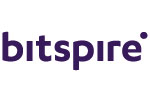

Niels Petersen
Technology Enthusiast, recreational cross-country runner and windsurfer
Technology Enthusiast, recreational cross-country runner and windsurfer
Conception and Implementation of Industrial IoT and Edge Computing platform for shopfloor environment
IT project management for global manufacturing service bus rollout
September 2020 to December 2022Part of the international Trainee programme with interdisciplinary assignments - such as project manager, software developer or solution architect
September 2018 to August 2020Focus on
responsible for the IT infrastructure and involved in digitalism process of historical artifacts at the Centre for Collection Development (academic collections)
April 2017 - January 2018Mayor programm in Business Intelligence at EFREI Paris (Grande école d'ingénieur) with focus on:
Project Management / Coordinator and Scrum Master
 May 2015 - July 2016around Oceanian continent including Australia, New Zealand and Fidji Islands
December 2014 - April 2015Focus on Strategic IT-Alignment and Business Process Reengineering
2011 -2014